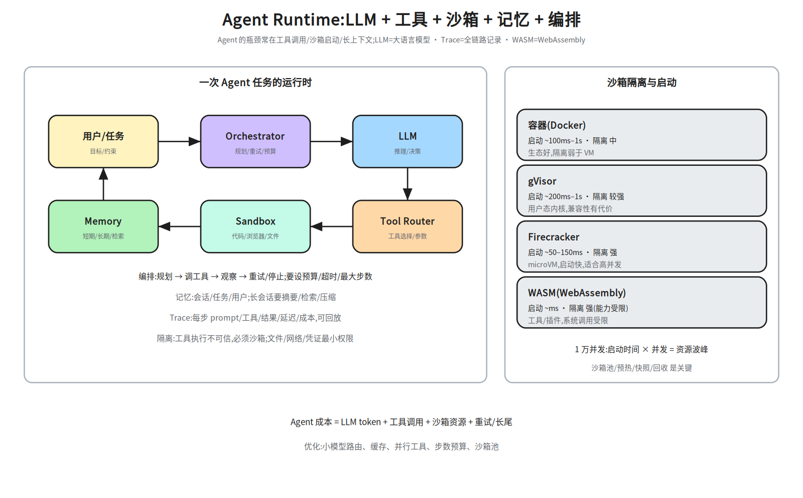
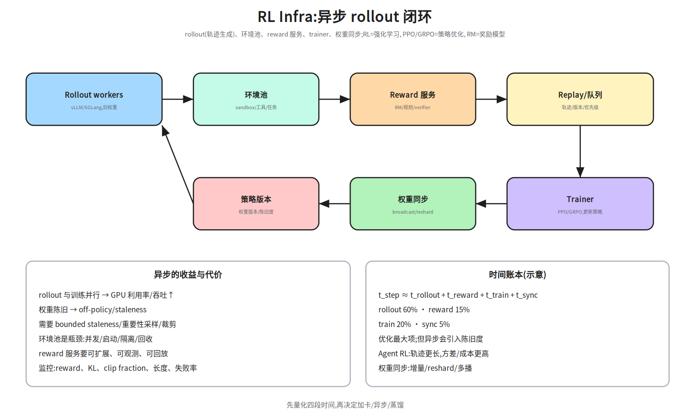
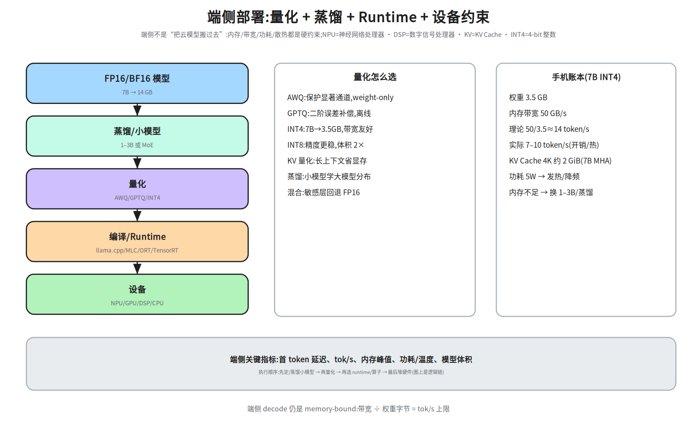
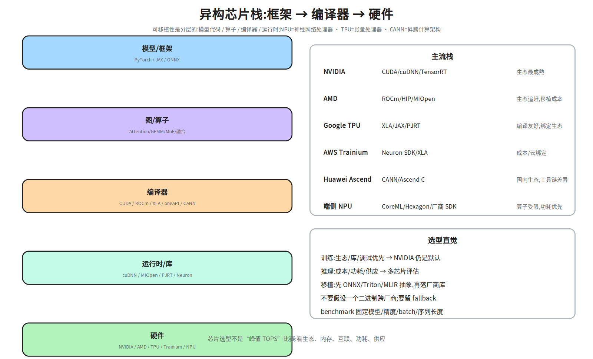
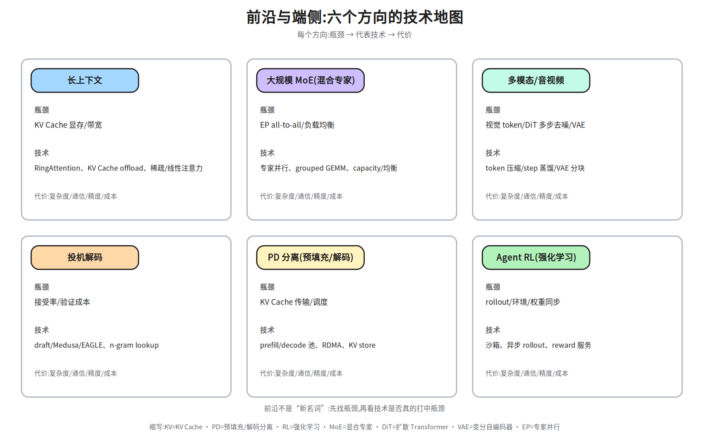

M2-6 · 前沿与端侧¶
本层回答：Agent、RL、端侧、异构芯片、长上下文这些“新方向”，在 Infra 上到底新在哪？ 哪些瓶颈是老的（显存/带宽/调度），哪些是真的新（沙箱、rollout、功耗、可移植性）？
前置（按节）： - §2–§3：
notes/23_training_systems.md §7（SFT/PPO/GRPO/rollout/权重同步）、notes/22_inference_systems.md §9–§10（投机解码/长上下文）。 - §4：notes/21_single_node_ops.md §4、§8（Roofline/量化）、notes/22 §8（量化）。 - §5：notes/24_distributed_base.md §3–§4（互联/拓扑）；硬件细节可先跳过。建议路径（每次 45 分钟）： ① §2（Agent Runtime/沙箱）；② §3（RL Infra）；③ §4（端侧）； ④ §5–§6（异构芯片/前沿地图）。
深度标注：§2–§4 为必学；§5 异构芯片为了解–加分（按目标岗位）； §6 前沿方向为了解，面试能讲清“瓶颈 + 技术 + 代价”即可。
0. 依赖图（学习顺序）¶
graph TD
A["推理/训练底座<br/>(M2-2/3)"] --> B["Agent Runtime<br/>工具/沙箱/记忆/编排"]
A --> C["RL Infra<br/>rollout/reward/权重同步"]
B --> D["Agent RL<br/>环境/轨迹/评估"]
C --> D
A --> E["端侧部署<br/>量化/蒸馏/Runtime"]
E --> F["异构芯片<br/>CUDA/ROCm/XLA/NPU"]
D --> G["前沿地图<br/>长上下文/MoE/多模态/投机/PD"]
F --> G汇点是：面对一个新方向，能判断它复用了哪些旧瓶颈、新增了哪些系统问题， 并给出可验证的优化方向。
1. 为什么这些方向“新”¶
- Agent/RL：新增了沙箱/环境/轨迹这条“数据生产线”，瓶颈从单次推理变成“每单位时间 产生多少可训练/可执行的轨迹”；
- 端侧/异构：新增了功耗、散热、内存带宽、可移植性约束，不能直接套云侧优化；
- 前沿模型（长上下文/MoE/多模态/投机/PD）：多数是把旧的显存/带宽/通信瓶颈放大， 再用系统手段拆开。
本层的方法固定：先找瓶颈指标 → 再看技术打中了哪个瓶颈 → 最后说代价和适用边界。 不要从名词出发，也不要把“新”当成“一定更好”。
2. Agent Runtime：让模型在沙箱里“做事”¶

2.1 组成¶
| 组件 | 作用 | 系统问题 |
|---|---|---|
| Orchestrator | 规划、调用工具、重试/停止 | 状态机、预算、超时、最大步数 |
| LLM | 推理/决策 | 延迟、成本、上下文长度 |
| Tool Router | 选工具、填参数 | 工具 schema、鉴权、失败重试 |
| Sandbox | 执行代码/浏览器/文件 | 隔离、启动速度、资源回收 |
| Memory | 短期/长期/检索 | 一致性、压缩、隐私 |
| Trace | 记录每步 | 存储、回放、评估 |
2.2 一次 Agent 任务¶
- 预算：token/时间/工具调用次数/金额；超预算要优雅停止；
- 重试：工具失败/超时/返回不可解析；区分可重试与不可重试；
- 记忆：长会话要摘要/检索/压缩；不要把整个历史塞进 prompt；
- 可观测：每步 prompt/工具/结果/延迟/成本；trajectory 可回放。
2.3 沙箱：隔离与启动速度¶
| 方案 | 启动 | 隔离 | 适用 |
|---|---|---|---|
| 容器（Docker） | ~100 ms–1 s | 中 | 生态好、可信代码 |
| gVisor | ~200 ms–1 s | 较强 | 用户态内核、兼容性有代价 |
| Firecracker | ~50–150 ms | 强 | microVM、高并发 |
| WASM | ~ms | 强（能力受限） | 插件/工具、系统调用受限 |
1 万并发 Agent 任务：启动时间 × 并发 = 资源波峰。要做沙箱池/预热/快照/回收； 每个沙箱要有 CPU/内存/磁盘/网络配额，防止资源滥用。
小账本：10k 任务、每任务 2s、池 500 → 约 20 波；若冷启动 1s，首波就要 500 个沙箱同时起， 所以池化/快照/预热比“把启动优化到 100ms”更关键。
1 万并发池账本：每个沙箱 2 vCPU/4 GB/1 GB 盘 → 峰值 20k vCPU/40 TB 内存；
启动 100 ms、任务 30 s → 新建/完成速率约 10000/30≈333 个/秒；同一时刻约 10000×0.1/30≈33 个沙箱在启动（不是 33 个/秒）。池化后可把冷启动从 100 ms 降到 ~10 ms。没有池化，启动风暴会先打满 API/镜像仓库，而不是 GPU。
2.4 延迟与成本瓶颈¶
- LLM decode：每个 token 都要读权重；长输出/大模型是主要成本；
- 工具调用：串行工具让延迟累加；能并行就并行，能缓存就缓存；
- 沙箱启动：冷启动占大头；池化/快照；
- 长上下文/记忆：token 成本 + prefill 延迟；
- 重试：失败重试会放大成本；要有上限和降级。
单任务成本 ≈ LLM tokens × 单价 + 工具调用 × 单价 + 沙箱秒 × 单价 + 重试/长尾；
按 task_id/tenant 打标签，才能做预算、限流和归因。
优化顺序：先减少步数/工具调用（算法/编排），再并行/缓存，再小模型路由， 最后才是换更快的 GPU。
2.5 Trajectory：采集、存储、回放¶
一条 trajectory 至少要有：
- 存储：对象存储/列式文件；大轨迹分块，索引与内容分离；
- 版本：模型/提示词/工具 schema 都要版本化，否则回放不可比；
- 确定性回放：固定 seed、工具返回（mock/录制）、环境快照；否则“回放”只是重跑；
- 隐私：轨迹可能含用户数据，要脱敏/访问控制/保留策略。
Agent 的调试和评估高度依赖 trajectory；没有 schema/版本/回放，失败无法归因。
3. RL Infra：rollout 是新的“数据生产线”¶

3.1 闭环¶
Rollout workers(旧权重) → 环境池 → Reward/Verifier → Replay/队列
→ Trainer(PPO/GRPO) → 权重同步 → Rollout workers(新权重)
- rollout：用当前策略生成轨迹；常用 vLLM/SGLang/TensorRT-LLM 做高吞吐；
- 环境池：代码执行/浏览器/工具/游戏；要隔离、可回收、可观测；
- reward：RM、规则/verifier、沙箱结果；要可扩展、可回放；
- 训练：PPO（actor+critic+reward+reference）或 GRPO（组内相对 advantage，省 critic）；
- 权重同步：broadcast/reshard/增量；同步太慢会成为瓶颈。
3.2 同步 vs 异步¶
- 同步：rollout 完再训练，稳定但 GPU 利用率低；
- 异步：rollout 与训练并行，吞吐↑；但权重陈旧 → off-policy/staleness；
- 需要 bounded staleness、重要性采样/裁剪、版本号；
- Agent RL：轨迹更长、工具调用/沙箱、reward 稀疏；成本与方差更高。
3.3 时间账本¶
例：rollout 60%、reward 15%、train 20%、sync 5% → 先优化 rollout； 但异步 rollout 会引入陈旧度，要一起看 reward/KL/长度。
面试问“RL Infra vs 推理 Infra”：推理 Infra 优化单次请求的延迟/吞吐； RL Infra 优化轨迹生产 + 训练闭环的吞吐，瓶颈常在 rollout/环境/同步，而不是单次推理。
4. 端侧：内存、带宽、功耗¶

4.1 优化链¶
顺序别搞反：通常先蒸馏/换小模型，再量化；先量化再蒸馏会把量化误差带进蒸馏目标。 但如果目标是“保留大模型能力、只压体积”，也可以先量化大模型——面试时要说清目标。
- 量化：AWQ（保护显著通道）、GPTQ（二阶误差补偿）、INT8/INT4；weight-only 对 decode 带宽友好；
- FP8：E4M3 精度高/范围小、E5M2 范围大/精度低；per-tensor/per-block scale，用校准集
amax估；outlier/敏感层要评估，掉点时可回退或混合精度。INT4 常用 per-group； 评测必须看任务指标 + 长尾，不能只看 perplexity（详见 M2-3 §8.3）； - 蒸馏：小模型学大模型分布；端侧常直接换 1–3B；
- Runtime：llama.cpp、MLC、ONNX Runtime、TensorRT、厂商 NPU SDK；
- 设备：NPU/GPU/DSP/CPU；算子支持/内存/功耗差异大。
顺序很重要：图里的“量化 → 蒸馏 → Runtime”是逻辑链，不是执行顺序。 实际通常先选/蒸馏合适的小模型（决定能力上限），再对最终模型做量化（决定体积/带宽）， 最后选 Runtime/算子。先量化再蒸馏会把量化误差带进蒸馏目标，通常不划算。
FP8 与 INT4 的口径：FP8 E4M3（精度高、范围小）适合权重/激活，E5M2 范围大、精度低；
INT4 的 AWQ/GPTQ 是 weight-only，需要校准集，按 group/channel 维护 scale，用 amax 估计。
掉点评估见 M2-3 §8：任务级指标 + 长尾 + 与 FP16 基线对比；敏感层回退 FP16/INT8。
评测门禁：端侧上线前要有“精度-延迟-内存-功耗”四张表；任何量化/蒸馏改动都要过 同一套任务评测和真机 benchmark，不能只看 perplexity 或实验室 tok/s。
4.2 手机账本（7B INT4）¶
权重 ≈ 7e9 × 0.5 B = 3.5 GB
理论上限 ≈ 内存带宽 / 权重字节 = 50 GB/s / 3.5 GB ≈ 14 tok/s
实际 7–10 tok/s(开销/热/调度)
KV 4K 约 2 GiB(7B MHA)
端侧 decode 仍是 memory-bound；带宽 ÷ 权重字节就是 tok/s 上限。 功耗 5 W 左右，长时间跑会发热降频；内存不足就换 1–3B/蒸馏/更激进的量化。
4.3 端侧 vs 云侧¶
| 端侧 | 云侧 | |
|---|---|---|
| 优势 | 隐私、离线、低延迟 | 大模型、弹性、集中运维 |
| 约束 | 内存/带宽/功耗/散热 | 网络、成本、SLO |
| 优化 | 量化/蒸馏/小模型/Runtime | batching/并行/量化/PD |
不要把云侧优化直接套到端侧：端侧没有 NVLink/大 batch，功耗和热是硬约束。
4.4 可复用加速 pipeline¶
- 评测门禁：任务指标、长尾集、延迟/内存/功耗；不过门禁不进部署；
- 版本/血缘：模型、量化配置、Runtime、硬件都要记录，才能复现；
- 回滚：保留 FP16/上一版量化包；线上异常能切回；
- 自动化：同一套 pipeline 支持 LLM/VLM/语音，按模型类型换 evaluator。
5. 异构芯片：可移植性是分层的¶

| 厂商 | 软件栈 | 特点 |
|---|---|---|
| NVIDIA | CUDA/cuDNN/TensorRT | 生态最成熟，迁移成本低 |
| AMD | ROCm/HIP/MIOpen | 生态追赶，移植/调优成本 |
| Google TPU | XLA/JAX/PJRT | 编译友好，绑定 JAX/云 |
| AWS Trainium | Neuron SDK/XLA | 成本/云绑定 |
| Huawei Ascend | CANN/Ascend C | 国内生态，工具链差异 |
| 端侧 NPU | CoreML/Hexagon/厂商 SDK | 算子受限、功耗优先 |
可移植性分层：
模型代码(PyTorch/JAX) → 图/算子(ONNX/Triton/MLIR) → 编译器(CUDA/ROCm/XLA/oneAPI)
→ 运行时/库(cuDNN/MIOpen/PJRT/Neuron) → 硬件
不要假设一个二进制跨厂商；用 ONNX/Triton/MLIR 做抽象，再落厂商库； 关键路径留 fallback。芯片选型看生态、内存、互联、功耗、供应，不只 TOPS。
6. 前沿地图：先找瓶颈，再看技术¶

| 方向 | 瓶颈 | 代表技术 | 代价 |
|---|---|---|---|
| 长上下文 | KV 显存/带宽 | RingAttention、KV offload、稀疏/线性注意力 | 精度/实现复杂 |
| 大规模 MoE | EP all-to-all/负载均衡 | 专家并行、grouped GEMM、capacity/均衡 | 通信/负载不均 |
| 多模态/音视频 | 视觉 token/DiT 多步去噪/VAE | token 压缩/step 蒸馏/VAE 分块 | 质量/延迟 |
| 投机解码 | 接受率/验证成本 | draft/Medusa/EAGLE、n-gram lookup | 显存/训练成本 |
| PD 分离 | KV 传输/调度 | prefill/decode 池、RDMA、KV store | 传输/复杂度 |
| Agent RL | rollout/环境/权重同步 | 沙箱、异步 rollout、reward 服务 | 陈旧度/成本 |
6.1 视频生成：和 LLM 推理不是一套¶
- 链路：文本/图像 → VAE/编码器 → DiT/UNet 多步去噪 → VAE 解码 → 视频；
- 瓶颈：多步去噪是 compute-bound；视频 latent/attention 显存大；VAE 解码也贵；
- 优化：step 蒸馏/少步采样、并行采样、序列并行/分块、专用 kernel、低精度；
- 注意：主流是 DiT/UNet + VAE；视频 latent 显存随
帧数×分辨率×通道增长， 去噪步数又多，所以瓶颈是显存 + 多步计算。扩散模型没有自回归 KV Cache， 不要把 LLM 的 PagedAttention/投机解码直接套上去。
面试答法：先说“这个方向的瓶颈是什么”，再说“技术打中了哪个瓶颈”， 最后说“代价是什么、什么场景不适用”。不要只报名词。
7. 面试要点¶
- 手机怎么部署 LLM？ → 蒸馏/小模型 → INT4 量化 → Runtime（llama.cpp/MLC/ORT）→ NPU/GPU；瓶颈是内存带宽/功耗/热；7B INT4 3.5GB，50GB/s 理论上限约 14 tok/s。
- Agent Runtime 的瓶颈？ → LLM decode、工具调用串行、沙箱启动、长上下文/记忆、 重试；优化：减少步数、并行工具、沙箱池、小模型路由。
- RL Infra 和推理 Infra 的区别？ → 推理优化单请求；RL 优化轨迹生产 + 训练闭环， 瓶颈在 rollout/环境/reward/权重同步。
- 怎么选芯片？ → 看生态/库/调试、内存/互联、功耗、供应、成本； 用 ONNX/Triton/MLIR 保持可移植性，关键路径留 fallback。
- 长上下文为什么贵？ → KV 线性增长、decode 每步读 KV、TTFT 变长； RingAttention/KV offload/稀疏注意力/PD 分离各自打不同瓶颈。
- MoE 推理的系统难点？ → 专家并行 all-to-all、负载不均、grouped GEMM、 容量/丢 token；推理通常不丢 token。
- 投机解码什么时候值？ → draft 快、接受率高、验证成本可摊销；batch 大/α 低时退化。
- 端侧量化和蒸馏怎么选？ → 先蒸馏/换小模型，再量化；AWQ/GPTQ/INT4 看精度/硬件； 必须做任务级评测。
- Agent RL 为什么难？ → 轨迹长、环境/工具沙箱、reward 稀疏、rollout 与训练同步； 成本/方差/可复现性。
- 异构芯片上怎么保证可移植？ → 分层抽象（框架/图/编译器/运行时）， 厂商库做后端；不要绑死一个二进制。
8. 常见坑¶
- 把端侧当“小云侧”：没有大 batch/NVLink，功耗/热是硬约束。
- 量化只看体积：精度/任务指标/长尾可能崩。
- Agent 只优化 LLM：工具/沙箱/长上下文才是瓶颈。
- RL 只看训练卡：rollout/reward/同步经常是大头。
- 异步 RL 不看 staleness：吞吐上去了，策略学歪了。
- 芯片只看 TOPS：生态/内存/互联/供应决定实际可用性。
- 前沿技术当万能：每个技术只打一个瓶颈，换场景可能不适用。
动手清单（60–90 分钟）¶
- 端侧账本：给 7B/3B/1B 模型算 INT4 权重、50 GB/s 下的 tok/s 上限、 4K KV 显存；比较“换小模型”和“更激进量化”的收益。
- Agent 成本：设计一个 10 步 Agent 任务，估算 LLM token/工具调用/沙箱启动成本； 找出最大项并给 2 个优化。
- RL 时间账本：给定 rollout/reward/train/sync 四段耗时，算吞吐瓶颈； 比较同步 vs 异步的吞吐与 staleness。
- 芯片选型：给一个训练任务和一个端侧推理任务，各选 2 个候选芯片， 列出生态/内存/互联/功耗/成本的取舍。
- 前沿 maps：选一个方向（长上下文/MoE/多模态/投机/PD），画“瓶颈→技术→代价”一页。
验收标准：能对一个新方向说清“复用了哪些旧瓶颈、新增了什么系统问题、怎么验证”。
相关图¶
26a_agent_runtime— Agent 编排/工具/沙箱/记忆/Trace；26b_rl_infra— rollout/reward/trainer/权重同步与异步代价；26c_edge— 量化/蒸馏/Runtime/设备 + 手机账本；26d_hetero— NVIDIA/AMD/TPU/Trainium/NPU 栈与选型；26e_frontier— 长上下文/MoE/多模态/投机/PD/Agent RL 地图。
下一步¶
- 回到 M2-2 §7 补 RL 训练细节；回到 M2-3 §9–§10 补投机/长上下文；
- 回到 M2-4 §3–§4 补异构互联/拓扑；
- 按目标岗位选一个方向做深：Agent 平台 / RL Infra / 端侧 / 芯片工具链。